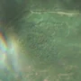
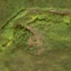

4,6 ha de pădure schimbată lângă Șiștarovăț
Între vara lui 2025 și 17 aprilie 2026, pe aproximativ 4,6 ha de pădure din orașul Lipova, lângă Șiștarovăț, județul Arad, imaginile Sentinel-2 arată că vegetația a dispărut sau s-a schimbat puternic. Nu am găsit o autorizație de tăiere care să acopere locul. Nu înseamnă automat că e ilegal; e un loc de întrebat.
Autorizația de tăiere
autorizația nu acoperă tăierea
Există o autorizație cu parcela publicată în amenajament, dar nu acoperă tăierea asta. Schimbarea cade în afara parcelei autorizate.


Înainte și după: Copernicus Sentinel-2, 10 m pe pixel, conturul zonei cu portocaliu. Poza detaliată (Esri World Imagery) e de acum 1–4 ani: arată ce era acolo înainte, nu tăierea.
Pe scurt
- Identificator
- 20260417_46002_21671
- Locul
- Șiștarovăț, orașul Lipova, județul Arad (SIRUTA 9574)
- Coordonate (centru)
- 46.00206, 21.67056 · Google Maps · OpenStreetMap
- Suprafața
- 4,6 ha (din pixeli de 10 m; ± câțiva pixeli pe margine)
- Pădurea întreagă
- în vara lui 2025 (de atunci, nori sau iarnă)
- Prima imagine cu schimbarea
- 17 aprilie 2026
- Imagini în care se vede schimbarea
- 13
- Cât de sigur e semnalul din satelit
- ridicată
- Autorizația cea mai apropiată
- APV 2500238300420 · Ocolul Silvic Lipova, valabilă 10 iulie 2025 – 15 septembrie 2025, la 57 m de zonă
- Terenul
- pădure de stat, după amenajamentul silvic publicat
- Arie protejată
- Pădurea Neudorfului
- Pădure pierdută în jur, alți ani
- 2001, 2013, 2014, 2023 (Hansen)
- Garda Forestieră
- Oradea
Dacă vrei să verifici sau să sesizezi
- Pădurile din județul Arad sunt în grija Gărzii Forestiere Oradea, care controlează tăierile și dă amenzile.
- Autorizația găsită în zonă e emisă de Ocolul Silvic Lipova.
- Formularul Gărzii Forestiere Naționale primește sesizări și fără nume. Trimite linkul acestei pagini, coordonatele și pozele. Dacă tăierea e în desfășurare, sună la 112.
- Autorizațiile și transporturile de lemn se pot căuta în Inspectorul Pădurii.
Pagina arată ce se vede din satelit și ce scrie în registrul public; nu e o dovadă în sine.
Din alte surse
- presă (probabilă): Știre despre tăieri la Șiștarovăț, Arad, 07.06.2026: „Urs filmat în pădure la Șiștarovăț | Au fost informate autoritățile - Critic Arad” Nu e sigur că e vorba de aceeași tăiere. sursa
Cum citezi zona
Linkul acestei pagini nu se schimbă. Dacă zona iese vreodată de pe hartă, pagina rămâne, cu data și cu ce știam despre ea.
Pădurea RO, zona 20260417_46002_21671: 4,6 ha, Șiștarovăț, orașul Lipova, județul Arad; schimbare văzută din satelit între vara lui 2025 și 17 aprilie 2026. https://iliemihai.github.io/padurea-ro/zona/20260417_46002_21671/ (consultat la [data]). Date: CC BY 4.0.
Datele zonei: GeoJSON · toate zonele: date deschise · licența CC BY 4.0.
Istoricul zonei pe hartă
Starea se poate schimba când registrul publică o autorizație sau când analistul vede poze mai bune. O ținem aici, ca un link citat să arate și ce spuneam atunci.
Pe hartă cel târziu din 5 noiembrie 2026.
- 5 noiembrie 2026 – azi · autorizația nu acoperă tăierea
Detalii tehnice, pentru verificare
De ce acest nivel de încredere:
- văzută schimbată în 13 imagini diferite
- peste 3 ha
- pădurea din jur e neschimbată
- ultima dată am văzut-o intactă în vara lui 2025 (de atunci, nori sau zăpadă)
- AI-ul vede pădure dispărută
- Placa Sentinel-2
- 34TER
- NDVI de referință
- 0.86
- NBR de referință
- 0.6
- Scăderea în pădurea din jur
- 0.01
- Persistență
- 0.89
- NDVI / NBR după
- 0.57 / 0.269
- Analistul de zi (model)
- taiere · 0.9 · claude-haiku-5-5
Cum se calculează fiecare: metodologia.
Pune harta zonei într-un articol
Copiază codul în articol (merge în majoritatea site-urilor de știri). Sau pune doar linkul: WhatsApp, Facebook și X arată singure poza zonei.